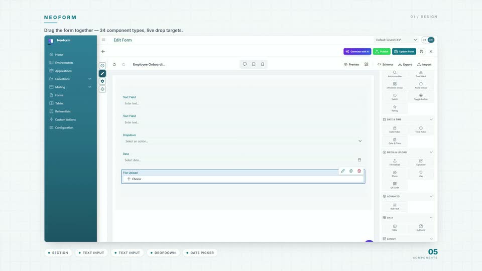
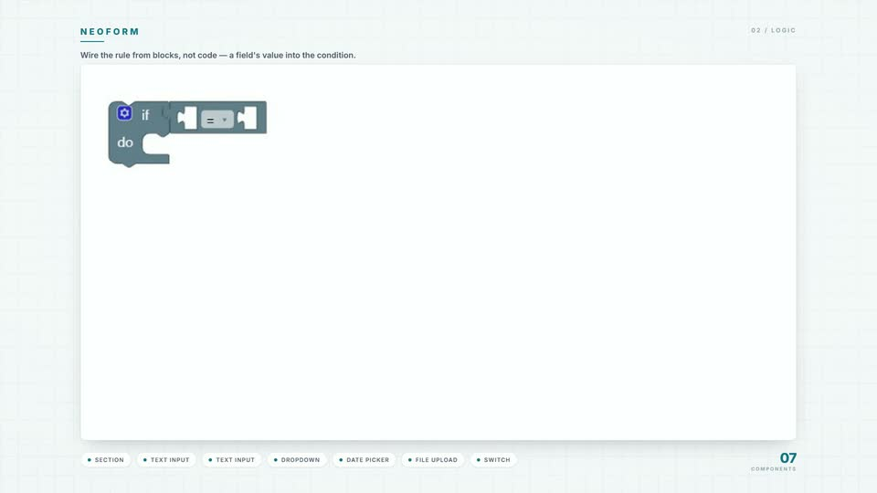
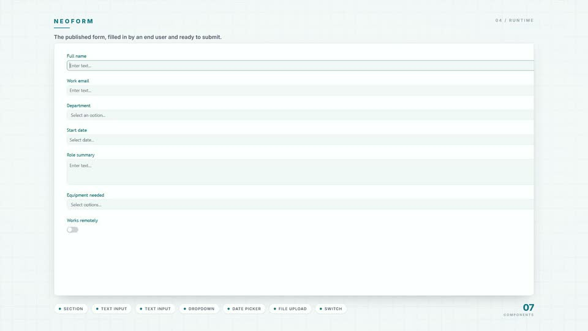

NeoForm
A low-code platform: admins drag forms together, wire their logic in Blockly, and publish them inside the product or as a link a stranger can open.
Overview
NeoLedge's ECM product needed custom intake forms for every deployment — a developer's project each time. NeoForm turns that into configuration: admins compose forms, tables and referentials, wire runtime behaviour in Blockly, and publish them inside the authenticated Studio or as anonymous public links. I built across it — the canvas, its 38 component types and 45 validation rules, the Blockly layer that wires them and the AI co-designer that drafts them — and the security work is mine end to end: PostgreSQL row-level security as a second tenant boundary, an AST gate in front of the server-side JavaScript sandbox, and an SSRF filter that runs in the socket connect callback rather than at URL-validation time, closing the DNS-rebinding window.
Problem and objectives
NeoLedge's ECM product needed custom intake forms for every deployment — a developer's project each time. NeoForm turns that into configuration.
- Forms, tables and referentials composed by an admin, not a developer
- Runtime behaviour wired visually, then published in-app or as a public link
- Server-side scripts and outbound connectors that cannot be turned against the platform
Architecture
Builder
Vue 3 · TypeScript · Blockly
Drag fields onto a canvas; wire behaviour in Blockly.
- Builder Vue 3 · TypeScript · Blockly — Drag fields onto a canvas; wire behaviour in Blockly.
- AI co-designer typed operations — The model emits typed operations; a deterministic compiler builds the Blockly logic.
- Public forms OTP · OIDC · bot check — Published links a stranger can open, served from frozen snapshots.
- API ASP.NET Core · deny by default — A test walks the live endpoint table to prove deny-by-default authorization.
- Script sandbox AST gate — Server-side JavaScript passes an AST gate before it runs.
- PostgreSQL row-level security — A second tenant boundary, proven by tests that bypass EF entirely.
- Connectors REST · 4 SQL engines — SQL read-only gated; REST pinned to a socket-level SSRF filter.
Engineering challenges and decisions
- PostgreSQL row-level security per tenant, proven by tests that bypass EF entirely
- AI co-designer: the model emits typed operations, a deterministic compiler builds the Blockly logic
- Deny-by-default authorization enforced by a test that walks the live endpoint table
- Outbound connectors across four SQL engines behind a read-only statement gate; the REST connector pinned to a socket-level SSRF filter
Technologies
Also in use: Keycloak / OIDC, Multi-tenancy, PostgreSQL RLS.
My contribution
I built across it — the canvas, its 38 component types and 45 validation rules, the Blockly layer that wires them and the AI co-designer that drafts them — and the security work is mine end to end.
Screens
Stills from the demo film.



Results
- 38
- component types
- 45
- validation rules
- 4
- SQL engines behind a read-only statement gate